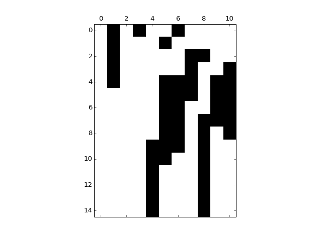

DynPy tutorial¶
Let’s try to get space time diagram of yeast network
import numpy as np
import matplotlib.pyplot as plt
import dynpy.bn
import dynpy.sample_bn_nets
num_steps = 15
bn = dynpy.bn.BooleanNetworkFromTruthTables(rules=dynpy.sample_bn_nets.yeast)
spacetime = np.zeros(shape=(num_steps,bn.num_nodes), dtype='int')
cState = np.zeros(bn.num_nodes)
cState[ [1,3,6] ] = 1.0
for i in range(num_steps):
spacetime[i,:] = cState
cState = bn.getNextState(cState)
plt.spy(spacetime)
(Source code, png, hires.png, pdf)
{kind=link}
{kind=link}

For a CA:
import numpy as np
import matplotlib.pyplot as plt
import dynpy.ca
num_nodes = 100
num_steps = 50
ca = dynpy.ca.CellularAutomaton(num_nodes=num_nodes, num_neighbors=1, ca_rule_number=110)
spacetime = np.zeros(shape=(num_steps,num_nodes), dtype='int')
cState = np.zeros(num_nodes)
cState[int(num_nodes/2)] = 1.0
for i in range(num_steps):
spacetime[i,:] = cState
cState = ca.getNextState(cState)
plt.spy(spacetime)
(Source code, png, hires.png, pdf)
{kind=link}
{kind=link}